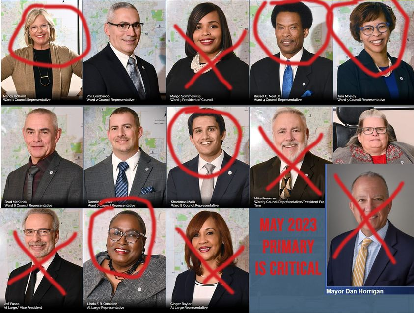

Timeline photos
If you want change in Akron there is only 1 way to do it: AT THE BALLOT.
I NEED NEED NEED NEED NEED you to understand the absolute critical importance of the May 2023 primary in Akron. All city council members will go on the ballot and so will the mayor. IF WE DON'T PRIMARY OUR ENEMIES THEY WILL EASILY WIN IN THE NOVEMBER GENERAL ELECTION.
WE MUST GET DEMOCRATIC CANDIDATES ON THE MAY 2023 PRIMARY.
I will gladly help you if you want to run.
The council members with X's must go. They only vote to help corporations and keeping the rich stay rich.
The council members that are circled are good, independent members that vote their conscience.
The ones with nothing are just average and could stay or go.